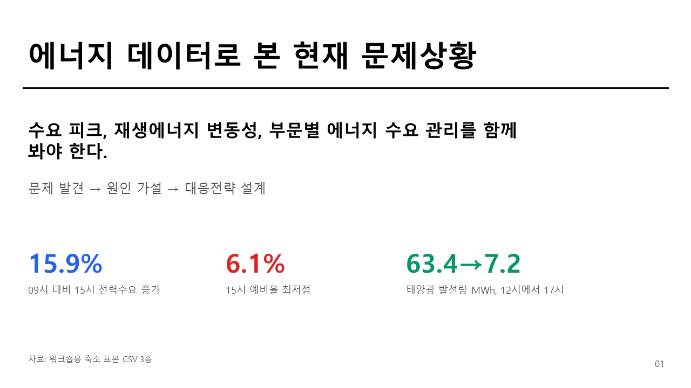
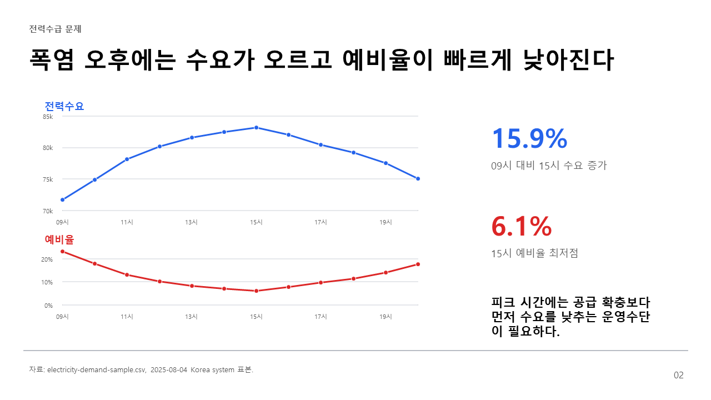
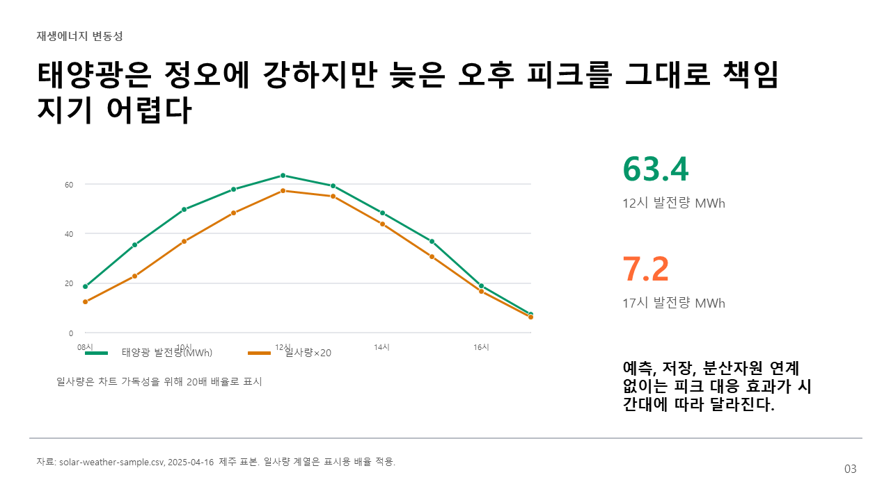
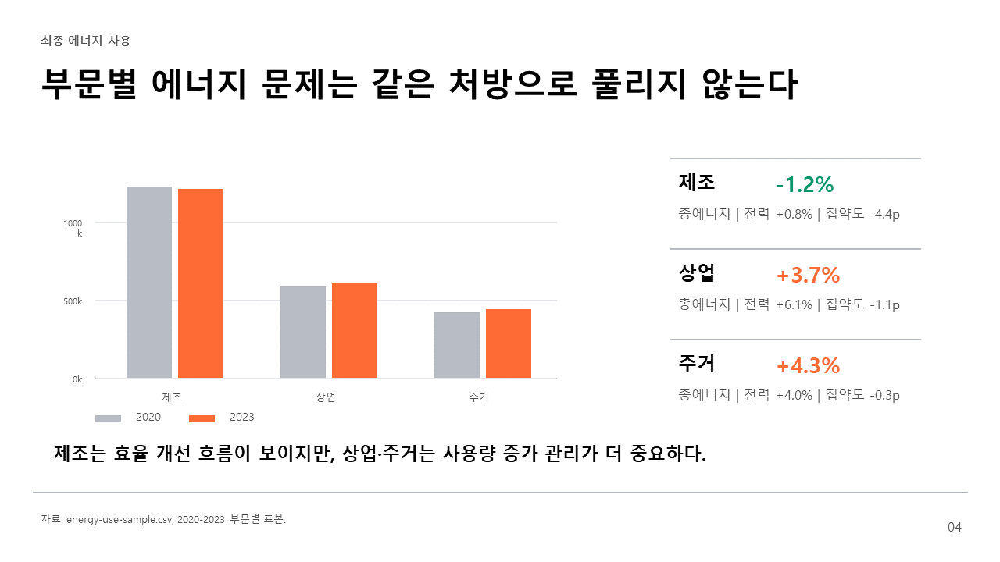
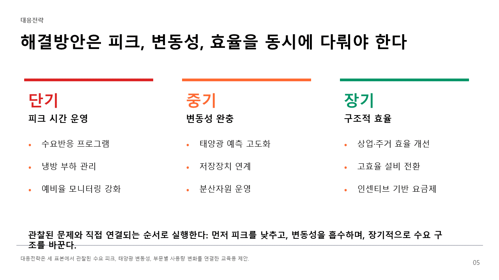
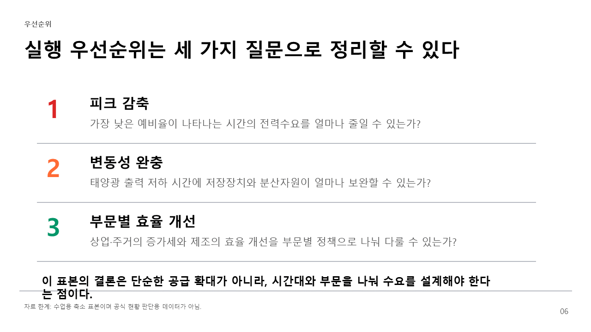

KSU Energy Workshop
에너지 데이터로 본 현재 문제상황
수요 피크, 재생에너지 변동성, 부문별 에너지 수요 관리를 함께 봐야 합니다.
15.9%
09시 대비 15시 전력수요 증가
6.1%
15시 예비율 최저점
63.4→7.2
태양광 발전량 MWh, 12시에서 17시

01. 문제 제기

02. 전력수급 문제

03. 재생에너지 변동성

04. 최종 에너지 사용

05. 해결방안

06. 실행 우선순위